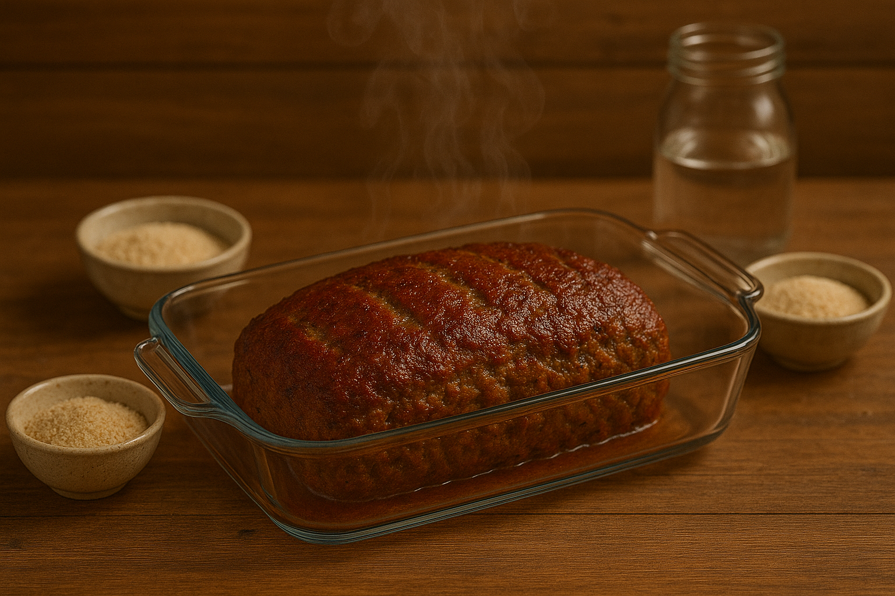

Meatloaf
Home

Description
Meatloaf is a savory dish made from ground meat—often beef, pork, or a combination—mixed with breadcrumbs, eggs, and seasonings, then shaped into a loaf and baked. It’s a hearty comfort food, often served sliced with gravy, ketchup, or other sauces.
Ingredients
Meatloaf
- 1 large egg
- 1/3 cup milk
- 1 tsp Worcestershire sauce
- 1/2 cup plain breadcrumbs
- 1 tsp Italian seasoning
- 1/2 tsp garlic powder
- 1 tsp salt
- 1/4 tsp freshly cracked black pepper
- 1/2 cup minced onion
- 1.5 lbs. ground beef (80/20)
Glaze
- 1/2 cup ketchup
- 1 Tbsp brown sugar
- 1 Tbsp Worcestershire sauce
- 1 tsp yellow mustard
Steps
- Preheat the oven to 350ºF. In a small bowl whisk together the egg, milk, and Worcestershire sauce. In a separate small bowl, stir together the breadcrumbs, Italian seasoning, garlic powder, salt, and pepper. Mince the onion.
- Add the ground beef, egg mixture, breadcrumb mixture, and minced onion to a large bowl. Use your hands to mix the ingredients together until evenly combined. Avoid over mixing.
- Place the meatloaf mixture on a rimmed baking dish and shape it into a loaf that is approximately 4-inches wide, 8-inches long, and 2-inches tall.
- In a separate small bowl, stir together the glaze ingredients (ketchup, brown sugar, Worcestershire sauce, and mustard). Spread the glaze evenly over the top and sides of the meatloaf.
- Bake the meatloaf for 50-55 minutes, or until the internal temperature reaches 165ºF. Allow the meatloaf to rest for 5-10 minutes after baking, then slice and serve.